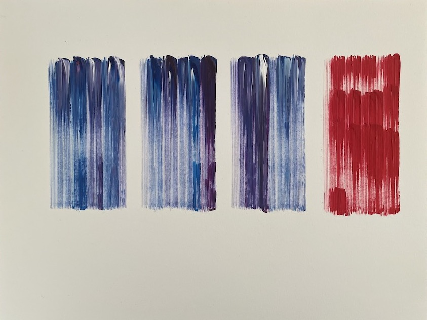

Completed in acrylic paint, the above is one of the first vision sketches done for the project. The idea behind it is that each brushstroke represents a section of the book being depicted. The width of the stroke denotes the frequency with which female pronouns are used while the color depicts the detected sentiment.
Tetrahedrons
Tetrahedrons is a piece created with the javascript library p5.js by generating one tetrahedron, randomly selecting one face, and generating another tetrahedron that shares that face. This process is repeated, until the structure is complete. Each time the page is refreshed, the output will be slightly different. The above is a depiction of the sentiment analysis of female pronouns in Jane Austen's Pride and Prejudice. Colors that are closer to pink represent positive sentiment, while colors closer to blue represent more negative sentiment.
The randomization makes the animation interesting, as a new structure will be generated each time the animation is started. However, this also means that the structure's aesthetic merit varies in a way that does not correlate to the data. An ugly structure may represent a novel with largely positive sentiment toward women, while a beautiful structure may represent a novel with negative sentiment.
The clean, geometrical lines of the piece are reminiscent of early computer art. In this way it stays within the vision for the project and provides a bit of irony and metaphor. However, this aesthetic is not the most conducive way to visualize the data in an evocative way. The lines and color blocks seem harsh and cold.
Untitled Frequency Analysis
The Great Gatsby (F. Scott Fitzgerald, 1925)
The Adventures of Sherlock Holmes (Arthur Conan Doyle, 1892)
Alice in Wonderland (Lewis Carroll, 1865)
Pride and Prejudice (Jane Austen, 1813)
Above is a visualization of a frequency analysis done to compare the number of mentions of female-specific versus male-specific nouns in novels.
The analysis involved calculating the number of sentences in a book that contain pre-defined female specific nouns, defining them as female sentences. Correspondingly, male sentences were calculated.
The number of dots in the three boxes on the left-hand side of each piece correspond to the ratio of male to female sentences. The right-hand side corresponds to the female to male ratio. This creates the effect of darker boxes communicating more mentions of the corresponding gender's nouns.
The verticality of the boxes correspond to different sections of the story. The top two boxes represent the first third of the book, the second two the middle third of the book, and the final two the final third of the book. The number of “blocks” was arbitrary. Four blocks could have been selected, dividing the book into quarters and resulting in a piece with two columns and four rows. However, I chose to divide into thirds because we often think of a traditional story arc as having an exposition, climax, and resolution. The analysis does not seek to divide into these three sections (has that been done??), so the decision was mainly symbolic.
The visual piece was assembled by randomly generating the appropriate calculated number of points within the rectangular bounds of that section.
Plotter Art

Note that the third slide shows the AxiDraw pen plotter creating on of the pieces.
The above works were designed in Adobe Illustrator by creating a series of lines for brushstrokes and for dragging the paint brush through the paint tray. These designs were exported into SVGs, opened in Inkscape, and executed a layer at a time by the AxiDraw.
They were designed in reaction to the data found here, in which both the positive sentiment and frequency of female nouns drops off suddenly in the early 20th century. The sudden red color is meant to depict this stark change and the anger associated with this finding.
Plotter Art on Linen
The above work was created by repeating the process described for "Plotter Art", except placing an old linen bedsheet beneath the paintbrush instead of paper.
I originally intended to cut the piece down but leave the rough edges of the fabric. However, when I mentioned the project to Scott, his brain immediately went to QUILT. I've been mulling this over for the last few weeks and wonder if I should execute this idea. I could create a bunch of different data representations on fabric, then compile them into a quilt.
I don't envision a traditional, clean-cut quilt, but instead something that appears more organic. The squares would be of varying sizes, or may not be squares at all. Perhaps the edges would even be left rough. The idea feels reminiscent of an exhibit by Jason Moran that was recently in the Denver Museum of Contemporary Art: Bathing the Room with Blues. The exhibit was a collection of gorgeous blue pigment on gampi paper. The unfinished, unpolished texture of the paper made the exhibit, themed to celebrate creative expression in jazz history, feel raw, honest and human. Perhaps I could replicate this emotion, making my visualizations all the more expressive.